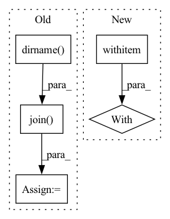

Pattern ID :5268

Before Change
f = Flow().load_config("flows/flow-index.yml")
with f:
data_path = os.path.join(os.path.dirname(__file__), os.environ.get("JINA_DATA_FILE", None))
f.logger.info(f"Indexing {data_path}")
url = f"http://0.0.0.0:{f.port_expose}/index"
input_docs = _input_lines(
After Change
def index_restful():
flow = Flow().load_config("flows/flow-index.yml")
flow.use_rest_gateway()
with flow:
flow.block()
def check_index_result(resp):
In pattern: SUPERPATTERN
Frequency: 3
Non-data size: 5
Instances
Fragment ID: 18642636
Project Name: jina-ai/examples
Commit Name: edaccb36633b8c0975805f2c739d1c208a732368
Time: 2021-06-15
Author: zhuoran2@andrew.cmu.edu
File Name: cross-modal-search/app.py
M Class Name: AnonimousClass
N Class Name: AnonimousClass
M Method Name: index_restful(0)
N Method Name: index_restful(1)
M Parent Class:
N Parent Class:
M File Name: cross-modal-search/app.py
N File Name: cross-modal-search/app.py
M Start Line: 33
M End Line: 51
N Start Line: 26
N End Line: 31
'>
Before Change
def start_remote_server(host, local_server_num, identify_file):
ssh_directory = os.path.expanduser("~/.ssh") if identify_file == "" else os.path.dirname(
os.path.abspath(os.path.expanduser(identify_file)))
ssh = paramiko.SSHClient()
ssh.set_missing_host_key_policy(paramiko.AutoAddPolicy())
private = paramiko.RSAKey.from_private_key_file(
os.path.join(ssh_directory, "id_rsa"))
config = paramiko.config.SSHConfig.from_path(
os.path.join(ssh_directory, "config"))
conf = config.lookup(host)
ssh.connect(hostname=conf["hostname"], port=conf["port"],
username=conf["user"], pkey=private)
sftp = ssh.open_sftp()
After Change
def start_remote_server(host, local_server_num, identify_file):
with ssh_connect(host, identify_file) as ssh:
sftp = ssh.open_sftp()
sftp.put("/tmp/hetu_ps_config.yml",
"/tmp/hetu_ps_config.yml", confirm=True)
sftp.close()
'>
Fragment ID: 18642632
Project Name: hsword/hetu
Commit Name: 31b5486597f4292a32cc2cdb30fa9379c95d08f9
Time: 2021-09-13
Author: 657671989@qq.com
File Name: python/runner.py
M Class Name: AnonimousClass
N Class Name: AnonimousClass
M Method Name: start_remote_server(3)
N Method Name: start_remote_server(3)
M Parent Class:
N Parent Class:
M File Name: python/runner.py
N File Name: python/runner.py
M Start Line: 37
M End Line: 60
N Start Line: 57
N End Line: 71
'>
Before Change
def main():
experiment_dir = os.path.dirname(os.path.realpath(__file__))
params_file = os.path.join(experiment_dir, "hyperparams.yaml")
sourcesep_samples_dir = os.path.realpath(
os.path.join(
experiment_dir,
"..",
"..",
"..",
"..",
"samples",
"audio_samples",
"sourcesep_samples",
)
)
with open(params_file) as fin:
hparams = sb.yaml.load_extended_yaml(
fin, {"data_folder": sourcesep_samples_dir},
)
After Change
data_folder = (experiment_dir / data_folder).resolve()
// Load model hyper parameters:
with open(hparams_file) as fin:
hparams = sb.load_extended_yaml(fin)
// Dataset creation
train_data, valid_data = data_prep(data_folder, hparams)
'>
Fragment ID: 18642629
Project Name: speechbrain/speechbrain
Commit Name: c9b83509f0a07e61ef75f23e359eec163c98ad12
Time: 2020-12-26
Author: mirco.ravabelli@gmail.com
File Name: recipes/minimal_examples/neural_networks/separation/example_conv_tasnet.py
M Class Name: AnonimousClass
N Class Name: AnonimousClass
M Method Name: main(0)
N Method Name: main(0)
M Parent Class:
N Parent Class:
M File Name: recipes/minimal_examples/neural_networks/separation/example_conv_tasnet.py
N File Name: recipes/minimal_examples/neural_networks/separation/example_conv_tasnet.py
M Start Line: 153
M End Line: 189
N Start Line: 130
N End Line: 153